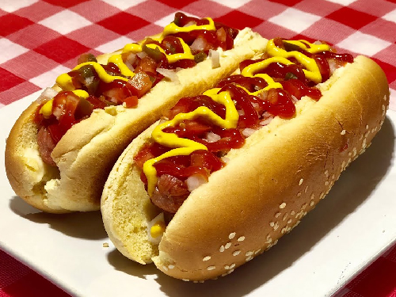
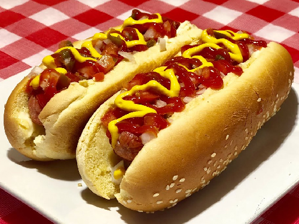
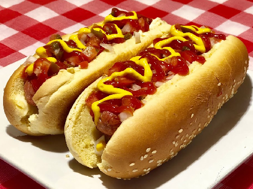
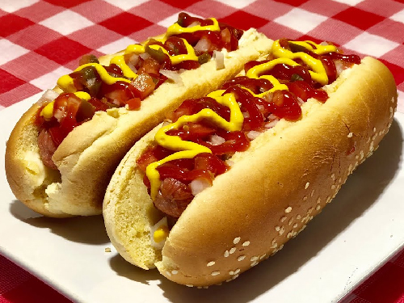

Menú
Comida

 


 

Es un Placeholder por el momento, no he terminado de crear las cuentas de cada red social
Pizzeria los Greñudos es un Proyecto llevado a cabo por estudiantes de 11-03 en la Institución Educativa Divina Pastora. Más específicamente propuesto por:
El proyecto tiene como proposito ser un negocio de comidas variadas, donde se venden todo tipo de estas con su respectivo catalogo; pizzas, deditos, sandwiches y demás. Hasta el momento, la pagina sigue en desarrollo.